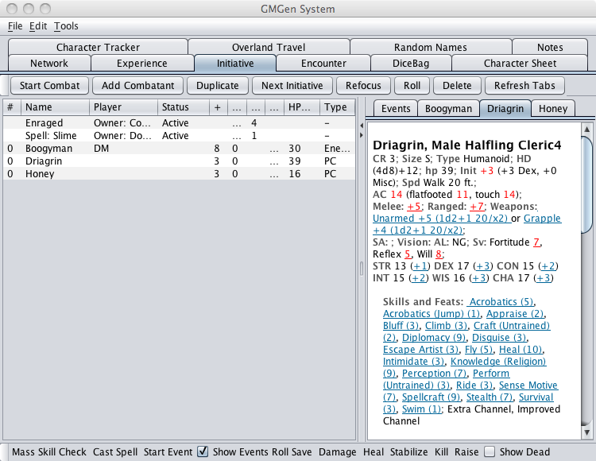
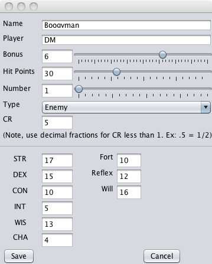
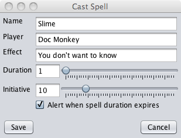
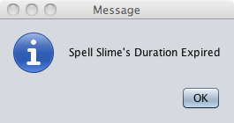
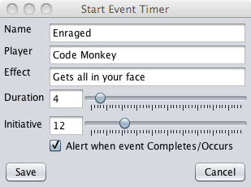
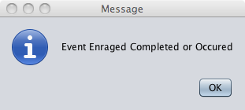
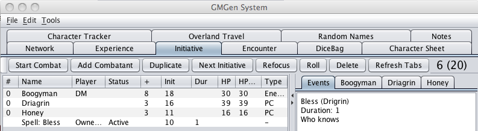
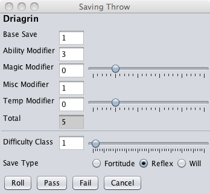
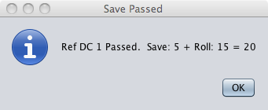

The Initiative Tab is the heart of GMGens combat tracking system. The Initiative Tab aids in tracking initiative, hit point loss, spells in effect and more. Looking over the tab you will see a row of buttons across the top, these buttons relate to initiative control and manipulation. The pane in the middle of the tab is split in two. On the left side is a list of all characters involved in combat along with the status of certain vital statistics. On the right side is a collection of tabs which display character information in a stat block format as well as a tab displaying any events which may be in effect. Along the bottom of the tab is another set of buttons which perform functions related to the status of the characters. Details instructions for running combat with GMGen are given below.

Opening and Saving
The state of the Initiative Tab can be saved to a file and opened at a later date. This is useful if you wish to set up encounters before hand and save time at the game table as well as for those times when the session must be ended before combat has been resolved. You may save the Initiative state at any time by choosing Save from the file menu. You may open previously saved combats by choosing Open from the File menu. GMGen will load all the characters involved in the combat in PCGen and add them to the Initiative Tab. If you already have other characters open in PCGen then opening a combat will add the characters to those already open, because of this you may need to quit PCGen and restart to get a clean open of your previously saved combat. Closing all characters in PCGen may accomplish this as well. All characters must be saved prior to saving the initiative state or it will not open. GMGen will present a Save dialog box for any unsaved characters before saving the initiative state.
Setting up
To run a combat scene with GMGen the first thing you will want to do is bring in all the characters involved in combat. First load all the player characters and/or NPC's you may have pre-generated into PCGen. You can do this in PCGen or in the Characters Tab of GMGen. Once loaded the characters will appear in the Initiative Tab. Next you will want to add enemy combatants, there are two ways to do this. The first is by adding them through the GMGen Encounter Tab , see the instructions for using that tab. The second way is to click the Add Combatant button from the top row. The Add Combatant button provides a convenient way to add combatants to the initiative list without generating new characters in PCGen, see details on this feature below.
Initiative list layout. The list has several columns in it each displaying a combat related statistic. They are as follows:
# displays the initiative order of the character based on the characters initiative roll.
Name displays the name of the character.
Player displays the name of the player.
Status displays the current status of the character. This can include Dead, Unconscious, etc..
+ displays the characters initiative bonus.
Init displays the characters initiative roll.
Dur displays the duration of the event (this applies only to events, for characters duration is blank).
HP displays the characters current hit points. Any subdual damage the character has taken will be displayed to the right of the regular hit points.
HP Max displays the characters normal full hit point total.
Type displays the characters assigned combatant type. Must be either PC, Enemy, Ally or Non-combatant. Only Enemy combatants will appear in the Experience tab once killed. You may change this setting by clicking directly on the type in the list, a drop down menu will appear and allow you to select a new type.
If you wish to set up encounters prior to game time you can save the state of the initiative tab by choosing Save from the File menu and giving it a name. This is also useful if you need to end a game before an encounter has been resolved. Simply save the encounter and open it during the next game session.
Starting combat
Once you have all the characters involved in combat loaded in the initiative tab you can begin combat rounds by clicking the Start Combat button. This will reset the combat round counter, roll initiative for all characters in the initiative tab and order them according to their initiative roll. If you wish your players to roll for their characters you can enter that roll manually in the Init column. The round number is indicated by the number in the upper right side of the tab, the number in parentheses indicates the initiative turn that is currently active. The buttons next to Start Combat button all relate to controlling the initiative sequence, their functions are detailed individually below.
Start Combat: this button resets the combat round counter, rolls initiative for all characters in the initiative tab and orders them according to their initiative roll.
Add Combatant: This button will bring up a dialogue box where you can enter combat related stats of the combatant you wish to add.

You can type in the name of the PC and the name of the player. The Bonus field is the initiative bonus of the combatant. You can enter the hit points of the combatant using the slider or by typing the number into the field. The Number field is the number of combatants you wish to add with these stats, multiple combatants will share the same name and each will have a number to differentiate them. You can also enter the combatants ability scores and saving throw bonuses. Keep in mind that the info visible in the initiative list can be edited directly in the list but the stats not listed (such as Ability scores) cannot be changed once set. Once you are done entering information click save and the newly created combatants will appear in the initiative list. Adding combatants in this way will not create new PCGen character files though the enemies will appear in the experience tab once killed.
Next Initiative: This button will move the round counter to the next lower character initiative and highlight characters with that initiative. If multiple characters have the same initiative they will all be highlighted. Initiative numbers not being used by any characters or events are skipped. If the current character has the lowest initiative score the Next Initiative button will raise the round counter to the next round and highlight the character with the highest initiative.
Refocus: The Refocus button will set the selected characters initiative to the maximum score (20 + the characters initiative bonus) and arrange him in the list according to the new result.
Roll: The Roll button will re-roll the initiative for the character selected and arrange him in the list according to the new result.
Delete: The Delete button will remove the selected character from the initiative list. Deleting a character will also remove the character from the experience tab if they are dead.
Refresh Tabs: This button will manually update the information in the stat block tabs to the right. This is only needed if you have set the GMGen preferences to not update on state change.
Managing combat
Once you have clicked the Start Combat button and combat has begun the next step is to click the Next Initiative button. This will set the round counter to round 1 and highlight the combatant with the highest initiative. Along the bottom of the Initiative Tab are a series of buttons and checkboxes which preform various functions relating to actions taken during combat, their functions are detailed individually below. Most of these button will apply a direct effect to the combatant or combatants currently selected. The Next Initiative button will select the next combatant so if you want to apply an action to another combatant you must first select that combatant.
Cast Spell: The Cast Spell button will open the Cast Spell window where you may enter the name of the spell along with other information to help you keep track of the spell and its effects.

The "Player" field will default to the character selected when the Cast Spell button was pressed. For Effect you can enter information to help remind you of the effects of the spell. Duration allows you to set how many rounds the spell will be in effect for. Initiative will be picked up from the casting character but can be altered if you wish. When the "Alert when spell duration expires" checkbox is checked an alert box will pop up at the end of the spells duration to remind you.

Start Event: The Event Timer functions in exactly the same way as Cast Spell dialogue box does but can be used to keep track of Raging characters, Bardic music, bad weather or any situation with a limited time duration you might need to track. Its also useful as a countdown for events that will occur in future rounds.

When the Initiative counter reaches the initiative of the event on the round that it expires an alert message will notify you.

Show Events: This button will show or hide the current Spells and Events in the initiative list. If hidden they will still be listed in the Events Tab to the right.

Roll Save: This button will open the Saving Throw dialogue box. You may use it to roll a saving throw by selecting either Fortitude, Reflex or Will, setting the Difficulty Class of the roll and clicking the roll button. This will cause an alert window to display the Roll result, the bonus, the total and the Pass/Fail result of the roll. When the Saving Throw window initially appears no save type will be selected and you may use it with any numbers you care to enter.


Damage: The Damage button will allow you to apply an amount of damage you specify to the currently selected character (or characters). This damage may be normal or subdual damage. When a characters hit points reach 0 their status changes to Disabled. When a characters hit points falls below 0 their status changes to Bleeding and they will lose 1 hit point per round until they are either stabilized or reach -10 HP and die. If a character has taken an amount of subdual damage equal to their current hit points their status changes to Staggered. If a character has taken an amount of subdual damage greater than their current hit points their status changes to Unconscious.
Heal: The Heal button will allow you to heal an amount of damage you specify to the currently selected character (or characters).
Stabilize: Characters who's hit points fall below 0 are dying and will lose 1 hit point per round until they are stabilized. The Stabilize button will change the dying characters status to Stable. Depending on how you have set your preferences dying characters may stabilize on their own.
Kill: The Kill button will reduce the of the currently selected character (or characters) hit points to 0 and change their status to Dead.
Raise: The Raise button will remove the status of Dead from the currently selected character (or characters) and bring their current hit point up to 1.
Show Dead: This button will show or hide dead characters in the initiative list.